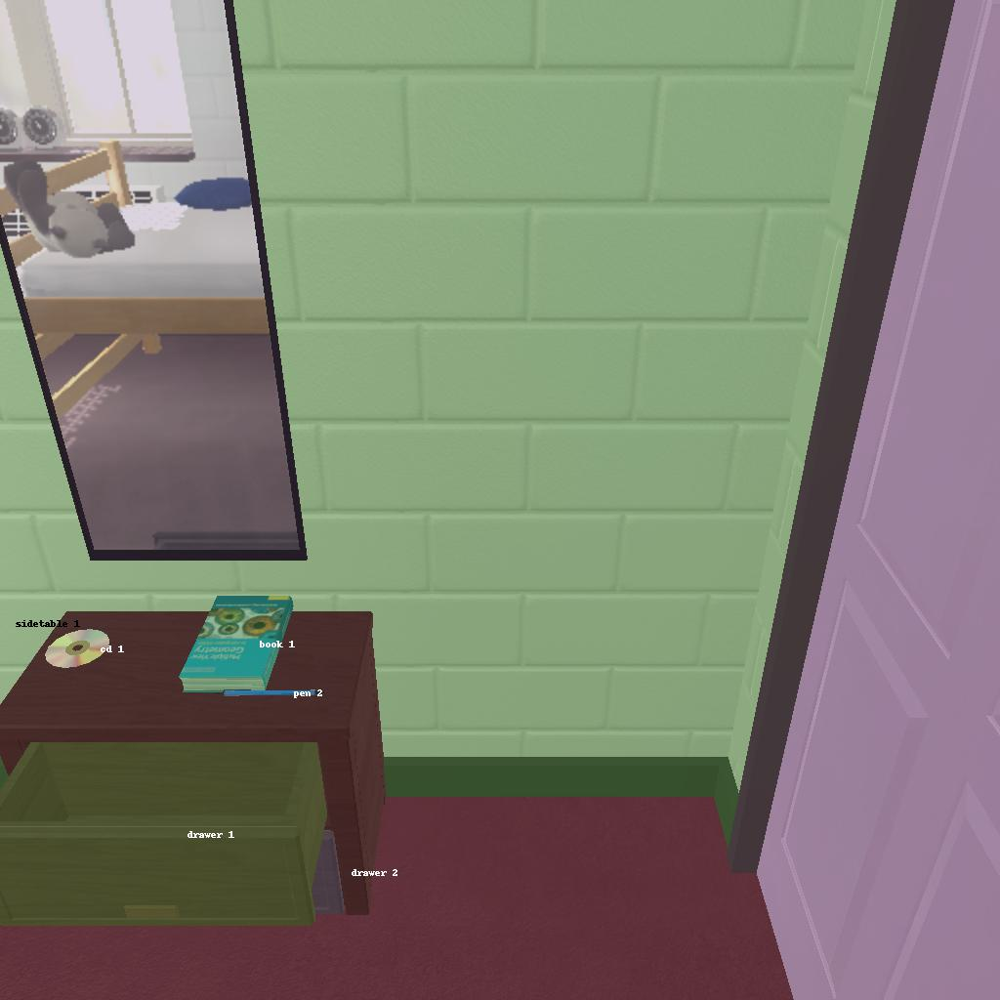

---------------------------------------------------------task: 8---------------------------------------------------------
--------------------------------------------------------------------------------------------------------------------------------------------------------------------
--------------------------------------------------------------------------------------------------------------------------------------------------------------------
Step:--------------------------------------------------------------------------14-------------------------------------------------------------------------------
----------------------------------------
VLM Prompt:
Image1:
Image2:
**Instruction**
1. Analyze the provided image to identify all visible household objects, focusing on those relevant to the task description "put some laptop on desk."
2. Use the analysis of the image and the task hint "The agent must find an object of the desired type, pick it up, find the correct location to place it, and put it down there." to answer the question: what is the most reasonable action in the choices for the task description "put some laptop on desk"?
4. Decide and write the answer using the template: The answer is: (i): , where i is the real number. If there is no desired object in the image, search every place based on **Initial Observation** to find the object. And if no one is exactly correct, choose a similar answer.
**Initial Observation**
You are in the middle of a room. Looking quickly around you, you can see bed (1), garbagecan (1), desk (1), sidetable (1), drawer (1-5), laundryhamper (1)
**Answer Choices**
(1): go to bed 1
(2): go to garbagecan 1
(3): go to desk 1
(4): go to sidetable 1
(5): go to drawer 1
(6): go to laundryhamper 1
(7): go to drawer 3
(8): go to drawer 4
(9): go to drawer 5
(10): open drawer 2
(11): close drawer 2
(12): take book 1 from drawer 2
(13): take cd 1 from drawer 2
(14): take pen 2 from drawer 2
**Answer**
Let's think step by step by following the instructions.
----------------------------------------
----------------------------------------
Original Response:
The task is to "put some laptop on desk," so we need to find a laptop first. Analyzing the image, we can see a sidetable with drawers and a book on it but no laptop. Based on the initial observation, other places to search for the laptop are bed (1), garbagecan (1), desk (1), sidetable (1), drawer (1-5), and laundryhamper (1). However, the image does not show all these places, so we cannot confirm the presence of a laptop in the image.
The most reasonable action to complete the task would be to search every place where a laptop might be found. Since we can't see the laptop on the sidetable, desk, or in the visible drawer 2, we should check the other drawers. The choices given allow us to open drawers 1, 3, 4, and 5. Since the image does not show the inside of these drawers, we should choose an action that allows us to search inside them for the laptop.
The answer is: (7): go to drawer 3.
----------------------------------------
----------------------------------------
>>> Refine Original VLM Response and Get Pure Action: go to drawer 3
----------------------------------------
-----------------------------------------------------------------
Running time: 10.403536319732666 seconds
Total Money: 3.5718599999999983
-----------------------------------------------------------------
-----------------------------------------------------------------
Text Observation:You arrive at loc 7. The drawer 3 is open. On the drawer 3, you see a desklamp 1, a alarmclock 1, a laundryhamperlid 1, a alarmclock 2, a cellphone 1, a creditcard 1, a pen 1, a pencil 1, a pencil 2, and a keychain 1.
-----------------------------------------------------------------
UNSUCCEED